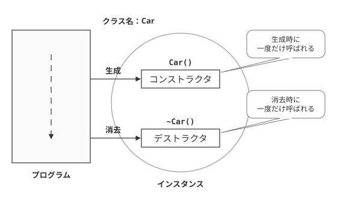
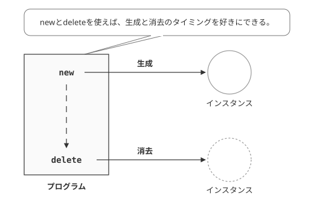

コンストラクタとデストラクタ
コンストラクタとデストラクタ
前回は、クラスのメソッド（メンバ関数）および、メンバ変数について学びました。これにより、クラス、インスタンス、さらにはメンバ変数、メンバ関数という、C++のオブジェクト指向の基本について学びました。
しかし、もちろんこれですべてというわけではありません。このうち、メンバ関数のなかには、コンストラクタと、デストラクタと呼ばれる特殊なメソッドがあります。今回はこれら特殊なメソッドについて説明します。
サンプルコード
まずは、その両者が含まれている簡単なサンプルプログラムを見てみましょう。
#ifndef CAR_H
#define CAR_H
// 自動車クラス
class Car{
public:
// コンストラクタ
Car();
// デストラクタ
~Car();
// 移動メソッド
void move();
// 燃料補給メソッド
void supply(int fuel);
private:
int m_fuel; // 燃料
int m_migration; // 移動距離
};
#endif // CAR_H
#include "car.h"
#include <iostream>
using namespace std;
// コンストラクタ
Car::Car() : m_fuel(0),m_migration(0)
{
cout << "Carオブジェクト生成" << endl;
}
// デストラクタ
Car::~Car()
{
cout << "Carオブジェクト破棄" << endl;
}
void Car::move()
{
// 燃料があるなら移動
if(m_fuel >= 0){
m_migration++; // 距離移動
m_fuel--; // 燃料消費
}
cout << "移動距離:" << m_migration << endl;
cout << "燃料" << m_fuel << endl;
}
// 燃料補給メソッド
void Car::supply(int fuel)
{
if(fuel > 0){
m_fuel += fuel; // 燃料補給
}
cout << "燃料" << m_fuel << endl;
}
#include "car.h"
int main() {
Car c;
c.supply(10); // 燃料補給
c.move(); // 移動
c.move(); // 移動
return 0;
}
燃料10
移動距離:1
燃料9
移動距離:2
燃料8
Carオブジェクト破棄 ← デストラクタの処理(自動的に呼び出される）
コンストラクタ
コンストラクタは、そのクラスをインスタンス化したときに、自動的に呼び出される特別なメンバ関数です（図4-1.参照）。コンストラクタ内で何をするかは、C++の規則にさえ従っていれば自由です。コンストラクタの名前は、クラス名と同じです。また、戻り値がないのも特徴です。このサンプルの場合、car.hの8行目のCar()メソッドがコンストラクタになります。
コンストラクタの実装が、car.cppの7行目から10行目です。
ここで、７行目に着目してください。
コンストラクタの定義の最初の行で、:で区切って、何かが記述されています。これは、メンバ変数の初期化処理で、コンストラクタの最初の行で利用可能です。書式は以下の通りになります。ここでは、m_fuelに0を、m_migrationに0をそれぞれ代入しています。
このように、間を,(コンマ)で区切り、()内に値を入れると、メンバ変数をその値で初期化することができます。なお、メンバ変数の並び順は、ヘッダファイルでの定義順にすることが推奨されています。その順番にしたがっていなくても文法上は間違いではありませんが、そのほうがソースコードが理解しやすくなりますので、そう心がけましょう。
このような方法でメンバ変数を初期化するのは、あくまでも、その値が定数であったり、外部からコンストラクタの引数として渡されるパラメータである場合（詳細は後述）に限られます。値を決めるのに何らかの処理が必要な場合は、あくまでもコンストラクタの処理の中で値を設定してもかまいません。
また、通常のメソッド同様、コンストラクタの中の処理は、{}の中に記述されます。実行結果からみてもわかるとおり、ここに記述された処理は、特に呼び出されなくても自動的に実行されることがわかります。ここでは、インスタンス生成時の様々な初期化処理が行われます。
デストラクタ
次に、デストラクタについて説明します。デストラクタとは、クラスのインスタンスが解放されるときに、解放の直前で自動的に呼び出されます（図4-1.参照）。解放されるタイミングは、そのインスタンスのスコープを抜けるときです。例えば、ある関数内でインスタンス化した場合、その関数を抜ける段階で解放されます。この例でも、main()の処理が終わるときにデストラクタが呼ばれていることがわかります。
デストラクタの名前は、クラス名の先頭に ~(チルダ) を付けたものになります。したがって、このサンプルの場合、クラス名がCarですから、デストラクタの名前は、~Car()になります。また、これ以外の名前を使うことはできません。
デストラクタで行う処理は自由ですが、基本的には終了処理を行うことが一般的です。終了処理というのは、動的に確保されたメモリの解放や、オープンされたままのファイルをクローズすることなどです。デストラクタの処理の実行を終えた時点で、そのクラスのインスタンスはメモリから解放されて無くなってしまいます。

図4-1：コンストラクタとデストラクタ
コンストラクタ・デストラクタの省略
コンストラクタやデストラクタは、必要がなければ作る必要はありません。省略した場合でも、コンパイラが自動的にコンストラクタおよびデストラクタを生成しています。ただ、そこで何をしているのかを知ることはできません。1日目、2日目で示していたサンプルにコンストラクタとデストラクタが省略されていても実行できたのはこのためです。
newとdelete
インスタンスの生成と解放のタイミング
ここでは、list4-1のサンプルでのインスタンスの生成と解放のタイミングを検証してみましょう。コンストラクタが呼び出されるのは、4行目のオブジェクトが宣言されたタイミング、デストラクタが呼び出されるのが、8行目の処理が終了し、main()の処理が終わった時です。
ところで、インスタンスの生成と消去のタイミングをコントロールできないのでしょうか？たとえば、画像データなど大量のメモリを消費するインスタンスの場合、生成と消去のタイミングが制御できないと、大変不便です。
実はその時に用いられるのが、new演算子および、delete演算子なのです。(図4-2.参照)

図4-2：newとdelete
サンプルプログラム
newおよび、deleteのサンプルとして、以下のプログラムを実行してみてください。なお、list4-1のcar.hおよび、car.cppを、ここではそのまま利用します。
#include "car.h"
#include <iostream>
using namespace std;
int main() {
Car* pC = 0;
pC = new Car(); // インスタンス生成
pC->supply(10); // 燃料補給
pC->move(); // 移動
pC->move(); // 移動
delete pC; // インスタンスの消去
cout << "インスタンスの消去終了" << endl;
return 0;
}
燃料10
移動距離:1
燃料9
移動距離:2
燃料8
Carオブジェクト破棄 ← デストラクタの処理(delete演算子で呼び出される）
インスタンスの消去終了
8行目のnew演算子で、Carクラスのインスタンスが生成され、アドレスがポインタpCに渡されます。なお、インスタンスへのポインタの操作の仕方の考え方は、C言語の構造体のものに似ています。pCでのアクセスは、->（アロー演算子）で行われます。なお、ポインタは、最初は0またはNULL（C++11以降はnullptr）で初期化しておくように心がけましょう。
最後に、12行目のdeleteで、生成されたインスタンスが破棄されます。これを用いれば、必要なタイミングでインスタンスの生成と消去を行うことができます。
演算子の書式
なお、newおよびdelete演算子の書式は、以下の通りです。
ここで注意してほしいのは、newの後に来るのは、クラス名ではなく、コンストラクタ名となっている点です。同じことではあるのですが、あくまでもnew演算子は、コンストラクタを呼び出し、インスタンスを生成するという役割を担っているのです。
deleteされたインスタンスは、デストラクタが実行され、消去されます。
malloc、freeを使わない理由
C++では通常、malloc関数（calloc、reallocも同様）および、free()関数を使いません。理由は、malloc関数ではコンストラクタを呼び出すことができないからです。同時に、free関数ではデストラクタが呼び出されません。そのため、C++言語では、メモリの生成および消去にはnewとdeleteが用いられます。
newとdeleteを用いたメモリの生成・消去
前述のように、C++言語では、mallocおよびfreeを使うことは推奨されません。それは一般の配列に関しても同様で、例えば、intのような基本データ型でも同様です。まずは、以下のサンプルを実行してみてください。
#include <iostream>
using namespace std;
int main()
{
int *p = 0;
p = new int(); // int型の領域を動的確保
*p = 123;
cout << *p << endl;
delete p; // 動的に確保した領域を解放
return 0;
}
new演算子は、その直後に書いた型の領域を確保します。delete演算子の使い方は、インスタンスの場合と同様、newで確保した領域を指すポインタを、deleteの直後に記述するだけです。newで確保した領域でないと解放は行えません。従って、malloc関数で確保した領域をdeleteで解放してはいけません。
次に、配列を生成する場合を見てみましょう。
#include <iostream>
using namespace std;
int main()
{
int *p = 0;
int i;
p = new int[10]; // int型10個分の領域を動的確保
for(i=0; i<10; ++i)
{
p[i] = i;
cout << p[i] << endl;
}
delete [] p; // 動的に確保した領域を解放
return 0;
}
new演算子を使って配列を確保するには、型指定の直後に[]を使って、配列に含まれる要素数を指定します。上の例を見て分かるように、配列を動的確保する場合に()はありません。
次にdelete演算子の使い方ですが、new演算子を使って配列を確保した場合、delete演算子にも[]をつけなければなりません。これを付けないと正しく解放できません。この[]の付け忘れは非常によくある間違いです。コンパイルは普通に成功してしまうので気をつけて下さい。